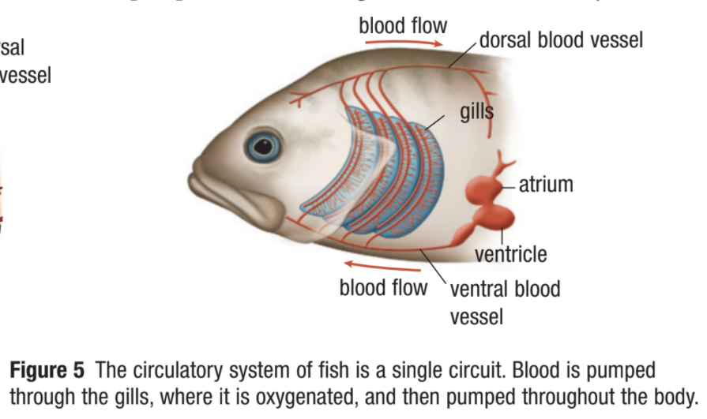

The Need for a Circulatory System
Callout
- Not all organisms need a circulatory system. Unicellular organisms, such as bacteria, some algae, and some fungi, are in direct contact with their environment.
- For most of these organisms, gases such as oxygen and carbon dioxide diffuse across the cell membrane.

- Not all organisms need a circulatory system. Unicellular organisms, such as bacteria, some algae, and some fungi, are in direct contact with their environment.
- For most of these organisms, gases such as oxygen and carbon dioxide diffuse across the cell membrane.
- Not all organisms need a circulatory system. Unicellular organisms, such as bacteria, some algae, and some fungi, are in direct contact with their environment.
- For most of these organisms, gases such as oxygen and carbon dioxide diffuse across the cell membrane.
- Some simple multicellular animals also do not need a circulatory system. Sponges, for example, consist of a body that has only two cell layers.

- The cells that line the body cavity have flagella that beat to circulate water through the cavity.
- As the water passes over the cells, oxygen is absorbed, nutrients are trapped, and carbon dioxide and wastes are eliminated.
- In a single day, a sponge can move a volume of water 20 000 times its body volume. The water in its central cavity is completely flushed about every 4.3 s, bringing in oxygenated water and suspended nutrients.
FUNCTIONS

- The circulatory system is a transport system of body.
- It comprises blood, heart, and blood vessels.
- The system supplies nutrients to and remove waste products from various tissue of body.
- The conveying media is liquid in form of blood which flows in close tubular system.
- Transport nutrients, hormones
- Remove waste products
- Gaseous exchange
- Immunity
- Blood vessels transport blood
- Carries oxygen and carbon dioxide
- Also carries nutrients and wastes
- Heart pumps blood through blood vessels
TYPES OF CIRCULATORY SYSTEMS
- Open
- Closed
Depends on animal’s size complexity
Three fundamental features
- a fluid that transports (circulates) materials through the body
- a network of tubes in which the fluid circulates
- a pump that pushes the fluid through the tubes
OPEN CIRCULATORY SYSTEMS
- In an open circulatory system, the circulating fluid is pumped into an interconnected system of body cavities, or sinuses, where it bathes the cells directly. It is present in most invertebrates.
- The circulating fluid, called hemolymph, is a mixture of blood and tissue fluid. Contraction of one or more hearts forces the hemolymph out of the circulatory tubes, called blood vessels, through the sinuses. When the heart relaxes, the hemolymph is drawn back to the heart through open-ended pores.
VISUALIZING AN OPEN CIRCULATORY SYSTEM THROUGH FIGURE 3
- Two hoses are inserted through holes in the side of the bucket. The other ends of the hoses are connected to a squeeze bulb that forces liquid in only one direction.
VISUALIZING AN OPEN CIRCULATORY SYSTEM THROUGH FIGURE 3
Continuation...
- As the bulb (heart) squeezes, the fluid (hemolymph) is forced through one hose (blood vessel) into the bucket (sinus). The fluid in the bucket is forced into the other hose (blood vessel) and back to the bulb (heart).

- Insects, for example, have a separate system of branching air tubes that deliver oxygen to all parts of the body.
- The main functions of the insect circulatory system are to transport nutrients and other chemicals to the cells, as well as to transport waste products out of the cells.
- All vertebrates, as well as some invertebrates, such as earthworms, squids, and octopuses, have closed circulatory systems.
- In a closed circulatory system the fluid (often blood) is contained within a network of tubes, or blood vessels.
- This system separates blood from the tissue fluid by keeping the blood enclosed in the vessels. The tissue fluid surrounds the cells and provides a medium for diffusion of substances from the bloodstream to the cells.




Callout
FROM SIMPLE TO COMPLEX

- The heart evolved from the simple aortic arches of ancient invertebrates to the two-chambered heart that is found in fish.
FROM SIMPLE TO COMPLEX

- As more time passed, the heart further evolved to the three-chambered heart that amphibians possess. The heart of amphibians has two atria and a single ventricle.
- The left atrium receives oxygenated blood from the lungs and skin.
- The right atrium receives deoxygenated blood from the body.
- The single ventricle pumps blood to both the lungs and the body.
- In most reptiles, such as snakes and lizards, the ventricle of the heart is partially separated into two areas by a wall of tissue called the septum.
- In mammals, birds, and crocodilians, the septum is complete and separates the tip of the heart into a left and right ventricle, resulting in a four-chambered heart.
Pulmonary Circuit circulates blood to the lungs for gas exchange with the external environment.
TWO-CIRCUIT CIRCULATORY SYSTEM
Systemic Circuit circulates blood around the body to deliver oxygen, nutrients, and other substances to the body cells, and to pick up carbon dioxide.